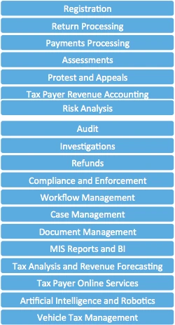
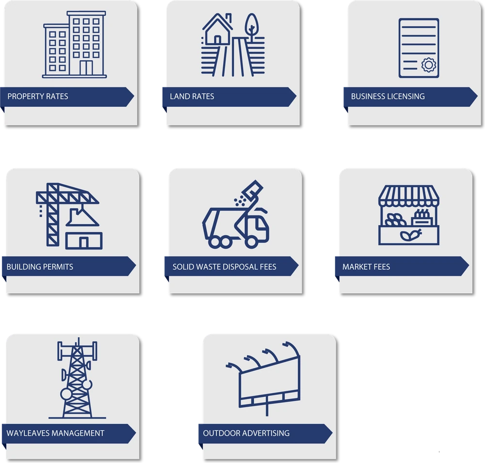
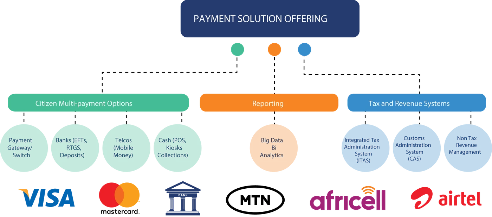

Technology & Innovation
Tax, revenue and information systems for government.
Introduction
Our Technology and Innovation services have been developed to complement our Public Sector Advisory sector. They assist government and local authorities as well as provide solutions for private and commercial organisations.
Our systems include consultative and technology and automation services which can be selected according to need. They include:
- Tax revenue collection and administration
- Financial management
- Information systems and analysis
- Public utility service provision platforms
- Hardware solutions (including supply and installation): CT security, computer accessories, networking implementations
- Software solutions: web applications, ICT maintenance contracts, consultancy services, and training
We have implemented IT projects for the Federal Government of Somalia and an infrastructure and networking solution in the Office of the Prime Minister of Somalia.
Our Integrated Tax Administration System is transforming the operation of taxation and non-tax revenue management for the Liberia Revenue Authority.
Liberia Revenue Authority (LRA) & Farsight Africa’s ITAS
Significant among Farsight Technologies’ projects is the Integrated Tax Administration System, ITAS. This new approach to public finance management has been adopted by the Government of Liberia, for which we manage the supply, installation, configuration and in-house training and support, transforming the way in which Liberia identifies, collects and manages domestic tax.


This substantial Farsight Africa service can be applied to revenue collections for all types of government, from district to federal, assisting the authority and the citizen, who can choose from many user-friendly payment services. ITAS can manage all tax and non-tax revenues.
Non Tax Revenue Management System
Non-tax revenue plays a key role in the national budget, particularly in the regional tier of government where most of the key revenue lies. Cities are a particular key source of non-tax revenue through the wide range of services they provide to citizens.
Our Non Tax Revenue Management System is geared to address key types of revenue collection, to help cities, districts and municipalities to correctly assess, collect and report on their revenues.




Somalia Non Tax Revenue Management System (Hornswitch)
In Somalia our subsidiary, Hornswitch, shows how our current operations, offering a complete payment gateway platform at the national level, can be leveraged to enhance in-country payment options. The solution is designed to facilitate the processing of local and international debit and credit cards, local and international interbank settlements, and to drive POS and ATMs.
As part of its product and service offering, Hornswitch is partnered with various leading technology solutions and service providers to ensure seamless service delivery across all identified channels, ranging from interconnectivity, ATMs and POS terminals to mobile and web applications.
Our particular experience in Somalia has given us the tools to identify the need and provide the specific solution. The same service can be developed to establish payment services in other nation states and regions.
Related work